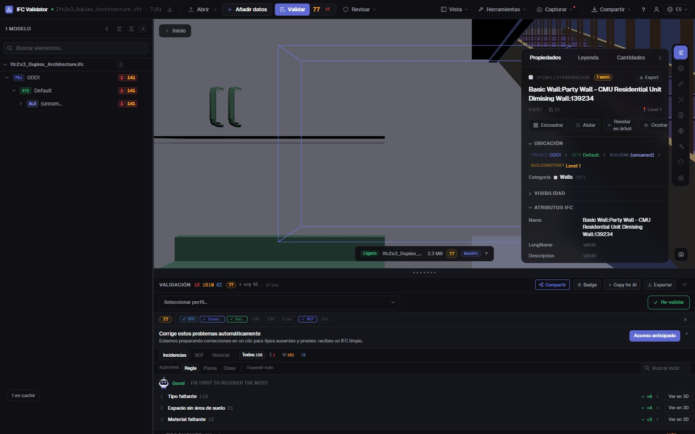
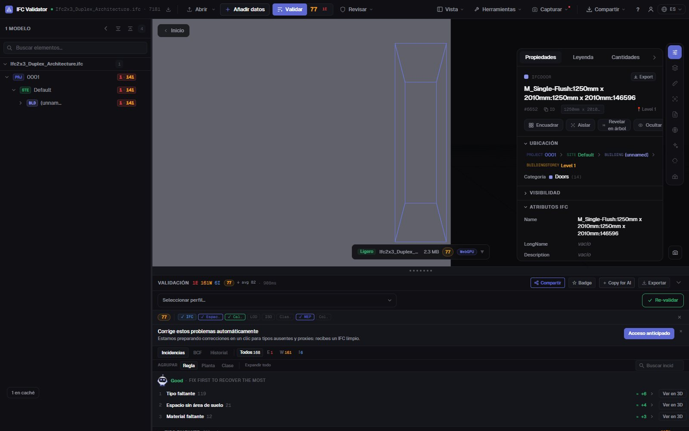

Editor IFC gratis
online, en tu navegador
Abre un archivo IFC, selecciona cualquier elemento y cambia lo que esté mal: su nombre, su LongName, el valor de una propiedad o la planta en la que está. Cada cambio se puede deshacer y el resultado se exporta como un IFC estándar que tu herramienta BIM vuelve a abrir. El archivo no sale de tu ordenador.
Editar un archivo IFC — gratis →Sin cuenta · Sin subir nada · Funciona en tu navegador · Gratis

Qué puedes hacer
Edita un IFC sin Revit, ArchiCAD ni licencias
Para las correcciones que, si no, devolverías al autor: rápidas, reversibles y guardadas como un IFC real.
Renombrar elementos
Cambia Name y LongName de cualquier elemento, o renombra a la vez todos los nombres duplicados o vacíos con un patrón ({class}, {storey}, {n}).
Editar valores de propiedades
Cambia el valor de cualquier propiedad que ya exista en los conjuntos de propiedades del elemento (Pset_WallCommon, Psets propios…).
Corregir GUIDs
Regenera en un clic los GlobalId duplicados o mal formados, el error de exportación más común.
Mover entre plantas
Reasigna un elemento a otro contenedor espacial cuando se exportó en la planta equivocada.
Deshacer todo
Cada cambio es un comando con deshacer y rehacer; nada toca el archivo original hasta que exportas.
Exportar IFC o GLB
Descarga el modelo editado como IFC (mismo esquema que el original) o como GLB para visores web y AR.
Capturas

Preguntas
Preguntas frecuentes
¿Hay un editor IFC gratis online?
Sí. IFC Viewer Online es gratis para cualquier uso, también comercial. Abre la página, arrastra un .ifc y edítalo en el navegador: sin instalar, sin cuenta y sin subir nada, porque el archivo se lee en local con WebAssembly.
¿Qué puedo cambiar en un archivo IFC?
Los nombres de los elementos (Name, LongName), los valores de las propiedades existentes, los GlobalId y el contenedor espacial al que pertenece un elemento. También puedes renombrar muchos elementos a la vez. No es una herramienta de modelado: la geometría no se edita.
¿El IFC editado se abre en Revit, ArchiCAD o Solibri?
Sí. La exportación escribe un IFC estándar con el mismo esquema que el archivo abierto (IFC2x3, IFC4, IFC4x3) y tus cambios aplicados, así que cualquier herramienta que leía el original lee el editado.
¿Se sube mi modelo a algún sitio?
No. La lectura, la edición y la exportación ocurren en tu navegador. Puedes comprobarlo en las DevTools: ninguna petición lleva el archivo. Sirve para proyectos bajo NDA y funciona sin conexión una vez cargado.
¿Puedo comprobar el modelo después de editarlo?
Sí: la misma app valida el archivo con 44 reglas de calidad y da un Health Score de 0 a 100, así ves cómo sube la nota tras tus correcciones.
Corrige el IFC tú mismo, en un minuto y sin idas y vueltas.
Renombrar · Editar propiedades · Corregir GUIDs · Deshacer · Exportar IFC
Editar un archivo IFC — gratis →